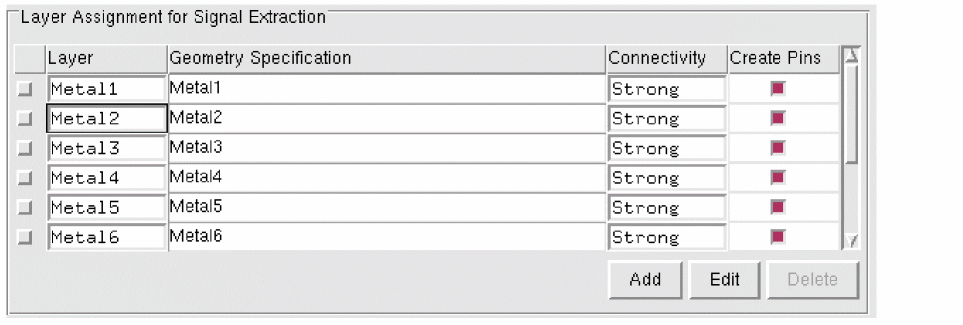

Layer Assignment Tables
The layer assignment tables are accompanied with three buttons - Add, Edit, and Delete to enable you to work with the table. In addition, the G-Spec Builder Form enables you to construct expressions for the geometry specifications.
The entries in the Layer Assignment for Signal Extraction table are used by other functions even when the Extract signal nets option is switched off. The situations in which this might happen are discussed below.
-
In the Extract step, if you have a geometry specification with more than two parts, for example as in,
(metal1 andnot marker)
Abstract Generator finds shapes that touch or overlap the pin shapes. This can result in the creation of pins that are different from the ones created in the Pins step.
In the above geometry specification example, it might happen that the design has two nets shorted together onmetal1and the layout has amarkerlayer that indicates the boundary between the two nets. Therefore, any shape on themetal1layer and not themarkerlayer which touches an original pin is turned into a pin. -
In the Abstract step, Abstract Generator tries to stretch the pins. To do this, it uses the geometry specification entered in the table to ensure that it converts only the shapes that satisfy the specification into pins.

Ignore Cells at the Top Level during Extraction
Extremely detailed and complicated layout designs might take too much time for extraction. To reduce the extraction time of such layout designs, you can selectively stop the extraction of certain cells at the top-level.
Use the absSetOption option to specify the cells to be ignored during extraction. Specify the cell names to be ignored as a space separated string in this option. For example, to ignore all instances of "CELL_55" and "CELL_56" during extraction, use:
absSetOption("IgnoreCellsForExtraction" "CELL_55 CELL_56")
The default state of this option is:
absSetOption("IgnoreCellsForExtraction" "")
For ignoring fluid guard rings and Multi-Part Paths (MPPs) that are implemented as Pcell instances, you can set the corresponding cell names in this option. Consequently, all instances of the specified cells are ignored during extraction.
Exclude Metal Purpose Blockages in Layout Designs
A layout design containing shapes on a metal purpose blockage might cause problems during extraction unless you modify the geometry specification settings. This is because these shapes usually cover large areas of a design so that when extraction is performed through these layers, all the geometry under the blockage is also extracted. This would obviously impact extraction performance and could cause shorts.
To avoid this potential problem, you can specify the purposes to be ignored in the Ignored Purpose(s) field (File – General Options – General tab). By default, shapes on the boundary purpose are ignored. If you want to include the shapes on the ignored purposes during the Pin, Extract, and Abstract steps, you can explicitly mention the layer and the purpose names in the geometry specification at the appropriate locations in the flow steps.
Enabling short detection during signal or power extraction can have a significant performance impact on the extraction process and the abstract generation runtime. To avoid this, you can set the ExtractDisableShortDetection option to true, which means that short detection is not run as a part of the signal or power extraction process.
Extract Signal Nets for Blocks and IO Cells
It is recommended that you should not use the Extract signal nets option for blocks or IO cells unless you are sure you need to. For example, use this option only if you want to perform antenna extraction.
If you do need to extract signal nets, do not create pins on a given layer unless it is necessary. For example, do not create pins on polysilicon, diffusion, or contact layers, except where there are dominant cut-layer spacings.
You should also turn on the Create boundary pins option in the Abstract step to ensure that not all of the extracted geometry is turned into pins. If you do not, Abstract Generator would cut around each pin, which would increase the time taken to generate the blockage model.
Related Topics
Customizing Pin Shapes in Standalone Abstract Generator
Relationship between Signal and Antenna Tabs
Return to top